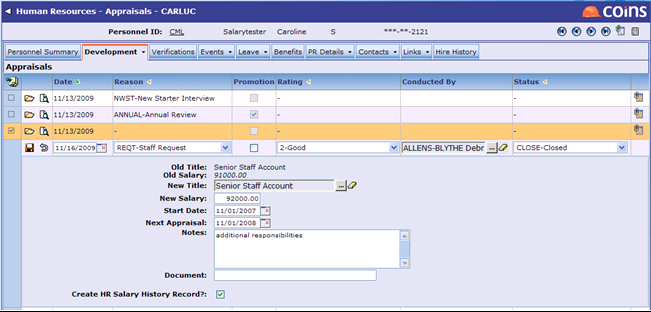
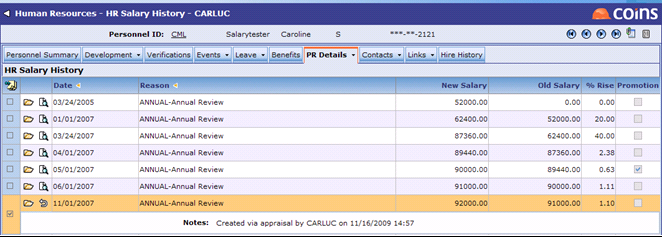
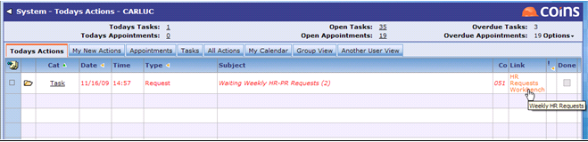
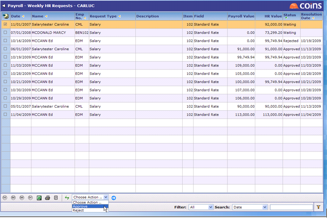
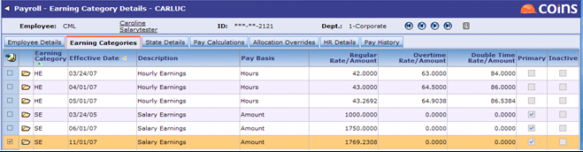
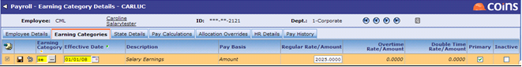
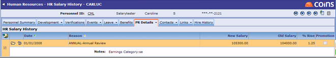

Setting Up Links
Setting Up Parameters
There are two Company Parameters (in Parameters) to enable the type of linking between PR and HR in OA for salary:
- HRPRSALARY - The type of HR to Payroll linking for salaries. Valid options are No Link or WORKBENCH.
- PRHRSALARY - The type of Payroll to HR linking for salaries. Valid options are No Link, WORKBENCH, or DIRECT.
- No Link - No linking (default setting). Salary information is not shared between Payroll and OA.
- WORKBENCH - An action appears on the Activities Workbench. Salary information is not created in the destination module unless approved.
- DIRECT - Payroll to HR only; changes made in Payroll create corresponding HR Salary History records to be created in HR.
Payroll Parameter Setup:
- SALARY - Enter a Pay Item used in Pay Item Sequence. It should be unique and not used to hold other payroll values.
- HRREQUSR - A comma-separated list of users who receive actions on their Activities Workbench screen for HR to Payroll requests.
HR Parameter Setup:
- SALFIELD - The field on the Payroll salary item which holds the annual salary amount corresponding to the amount in HR. For US & AUS Payroll, enter X.
- PRSALRES - The Salary Change Reason from the Lookup Codes to use for a salary history record created via Payroll linking (optional).
- PRREQUSR - A comma-separated list of users who receive actions on their Activities Workbench screen for Payroll to HR requests.
Employee Class Lookup Code
In Lookup Codes, enter the Normal Hours worked for each employee class.
When passing salary information from Payroll to HR, the Employee Class Normal Hours is used in conjunction with the employee's pay frequency and the employee's Primary Earning Category to determine Annual Salary in HR Salary History.
Employee Earning Category
You must set the primary Earning Category in PR Employee Maintenance on the Earning Categories tab. To do this, the Primary box for the desired Earning Category.
When passing salary information from HR Salary History to Payroll, OA looks at the attributes of the Earning Category (Amount or Hourly) and determines if the per period salary needs to be further reduced by Normal Hours from the Employee Class.
If the Primary Earning Category is Hourly, the Pay Rate is determined as follows:
<Annual Salary>/<# of Weeks in Pay Frequency>/<Normal Hours from Employee Class>
If Primary Earning Category is Amount, the Pay Rate is determined as follows:
<Annual Salary>/<# of Weeks in Pay Frequency>
Using Salary Syncing for AUS and US PR
For US and Australian Payroll, salary data can be entered in either Payroll or HR and passed to the companion module.
HR to PR - Linking Via Workbench
When Company Parameter HRPRSALARY is set to Workbench, creating an HR Salary History record in HR also creates an activity on the Activities Workbench for any users listed in Payroll Parameter HRREQUSR.
To use the function:
- Complete the setup described above for the following functions:
- Company Setup Parameters
- Payroll Parameters
- HR Parameters
- Employee Class Code
- Employee Earning Category
- Create a Salary History record in HR.
- In HR Appraisals, enter an Appraisal and create the Salary History record from the Appraisal (Figures 2a and 2b).
- Enter the Salary Change directly into the HR Salary History browse (Figure 2b).
Figure 2a

Figure 2b

- When a salary change is entered either through Appraisals or HR Salary History, an event is created on the Activities Workbench for each user listed in the HRREQUSR parameter (Figure 3).
Figure 3

- The task resides on the HR Requests Workbench in Payroll, and a hyperlink from the Activities Workbench starts the process (Figure 4).
On the HR Requests Workbench, Payroll users can review changes made by HR. Each row shows the date the change was applied in HR, the name, the employee number, the type of request (salary or employee/employer benefit), a more detailed description (for benefits only), the Payroll item number and field, the Payroll and HR values, the status of the request (such as Waiting, Approved, or Rejected), and the date the request was approved or rejected.
Since Earning Categories are effective dated in OA Payroll, the approval process can take place at any time.
Figure 4

- If approved, the new salary is reflected on the Earning Category Details tab of Employee Maintenance.

PR to HR Linking
Salary changes initiated in Payroll can be passed to OA HR via Salary linking. Salary changes initiated in Payroll are reflected immediately in HR Salary History by setting the PRHRSALARY parameter to DIRECT.
To use the function:
- Complete the setup described above for the following functions:
- Company Setup Parameters
- Payroll Parameters
- HR Parameters
- Employee Class Code
- Employee Earning Category
- Enter a rate change on the Earning Category Details tab of Employee Maintenance (Figure 5).
Figure 5

- If PRHRSALARY is set to DIRECT, the salary change is recorded directly into HR Salary History (Figure 6).
Figure 6
